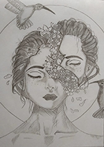
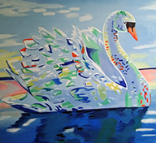
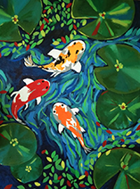

To me, this drawing has a great deal of significance. Even when we are damaged, we lose faith in others and believe the universe is conspiring against us. Everyone possesses this aura that reminds individuals that the greatest is yet to come.

I stumbled discovered this drawing while browsing Pinterest. Swans symbolise elegance, beauty, love, trust, and loyalty. Swans are also associated with inner beauty and self-love.

The higher-self, sentiments, and impulses are represented by fish. It's also a metaphor for higher levels of consciousness, as well as intelligence and cognition.